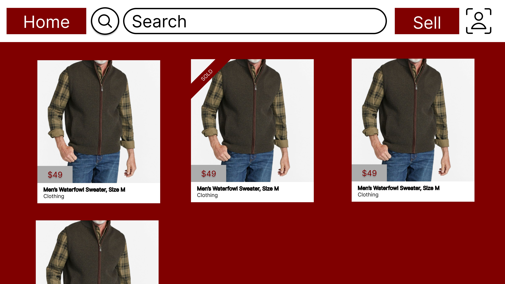
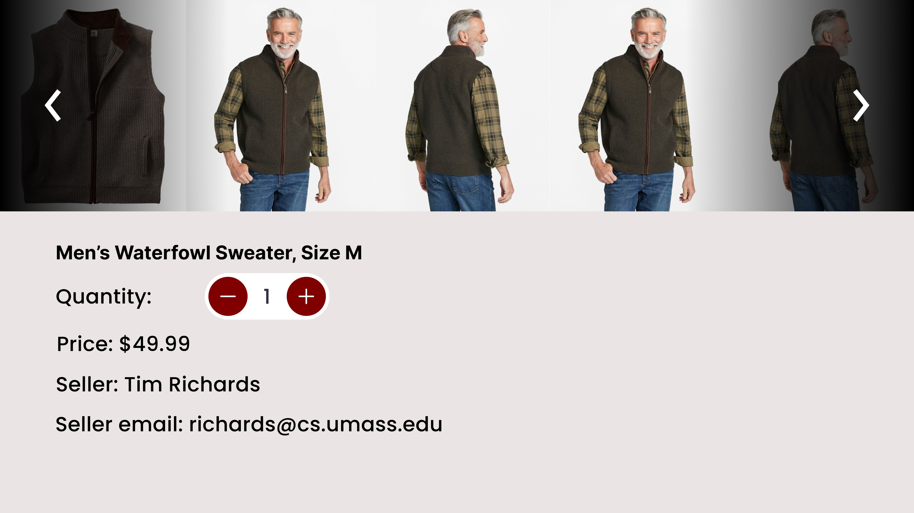
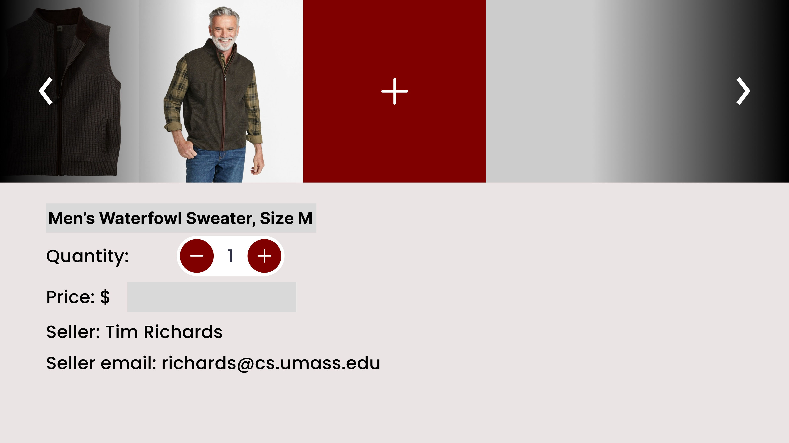
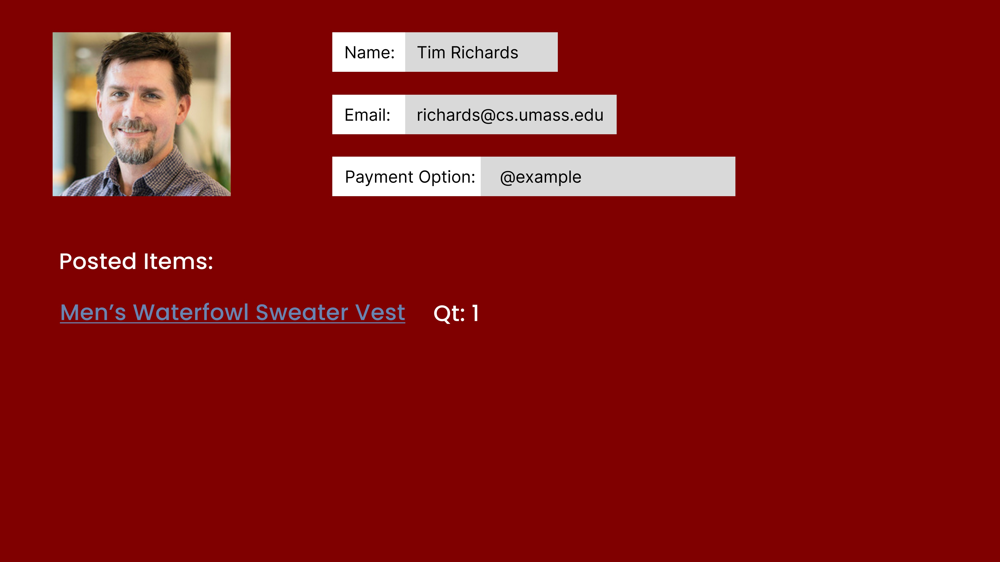

ZooBuy Team Members
Maxwell Tang
Hi, my name is Maxwell Tang. As of spring 2024, I am a Sophomore studying Computer Science and Math at UMass Amherst.
Sagarika Sonni
Hi! I am Sagarika, a Sophomore majoring in CS+Math at UMass Amherst.
Hanna Jiang
Computer Science @ UMass | Learn more on my GitHub and Website.
Sean McGonigle
Bio
Project Overview
Imagine you want to sell your bike to a fellow UMass student. First, you make a post on Snapchat with a single image of your bike, and set a vague price-point. Now, your story is posted in the middle of a string of 5 frat party ads and a lost-and-found post. A couple days later, you have 2 buyers, and both of them are lowballing you. After an hour of negotiating in between classes, you finally land on a price. One small problem: your buyer lives in Southwest, and you are in Sylvan. Tragic.
Fortunately, there's a solution: ZooBuy. Our app provides a central location for both buyers and sellers to network with each other and find the best prices for their items. Since our app is exclusive to UMass, students can feel comfortable sharing more private information on the app, like their dorm location and class schedule. Our app will also allow people to rate and review the items that they buy so that other users can see who is and is not a reputable seller.
Important Parts of the Application
To verify that an account is owned by a UMass student, our registration requires a umass.edu email address that will be associated with each account. To verify ownership of this email, our app will send a verification email for users to prove that they own an account. During registration, we also give users the option to opt into 2-factor authentication using Microsoft authenticator. Once users are verifies and logged in, they can begin shopping and selling!
Choosing what to buy is hard, and it's even harder with bad UI. That's why the first page users see when they log in is a grid of items currently being sold. Each entry shows the user a large image of what is being sold, captioned with the quantity remaining, the price, the seller, and the name of the item. The large thumbnails and informative captions allow users to quickly decide on an item they want to buy, making the shopping experience seamless.
However, users also need a way to filter for the specific type of item that they need. This is where the search feature comes into play. Using the Elasticsearch API, our search feature allows users to find exactly what they're looking for using natural-language queries, greatly simplifying the search process. Each listing also has a set of tags that users can search by, allowing queries for more specific things like certain models of electronics or specific clothing sizes.
Once users decide on what they want to buy, our app provides a list of useful features to simplify the process of payment and transportation. Firstly, our mobile-friendly and easy-to-use direct messaging feature allows users to communicate to sellers on the go if any problems arise while receiving packages. In addition, we included a publicly visible section on each user profile to list payment information, such as Venmo, to make the process of payment as smooth as possible. With these features, users can easily pay for the items they want to purchase, and quickly and conveniently communicate with sellers if they encounter any problems receiving their items.
Data Requirements
Zoobuy deals with a wide range of data, ranging from sensitive user data to responsive real-time messages. As such, ZooBuy needs a robust and efficient data infrastructure in order to provide a responsive and secure experience to users. In particular, ZooBuy needs to manage listings, user profiles, messaging, and payment information.
From seller listings to marking sold items, an efficient and effective method of keeping track of listings and purchases is a necessity. At its core, Zoobuy will curate a robust database of listings, each encapsulating crucial details like item descriptions, pricing, images, and seller contacts. This structured approach to data organization enables users to effortlessly navigate through a plethora of offerings, fostering a seamless browsing experience. We envision a robust home page that functions as a local marketplace: displaying recent listings, curated items, and direct messaging.
User profiles stand as pivotal data entities within Zoobuy's ecosystem. These profiles encapsulate pertinent personal information, including user names, contact details, and potentially profile pictures, alongside a repository of transaction histories. By maintaining a comprehensive record of user activities, Zoobuy enhances user engagement and fosters a sense of accountability among its community members. We plan to integrate a user-friendly UI that allows users to quickly navigate the information and details they are seeking.
In tandem with user profiles, Zoobuy will implement a sophisticated messaging system to facilitate communication between buyers and sellers. This messaging infrastructure will store dialogue threads, encompassing both sent and received messages, thus enabling effective interaction and negotiation. Such a feature not only streamlines the transaction process but also nurtures trust and transparency within the marketplace. By hosting our own direct messaging service, we allow the user more ease in negotiating buy and sell transactions, as well as provide users with a centralized locale for a user’s Zoobuy needs.
Integral to Zoobuy's functionality is the management of payment information. Ensuring the secure handling of payment details during transactions is paramount. Integration with reputable payment gateways such as Venmo or Apple Pay will furnish Zoobuy with the capability to execute secure and seamless transactions, elevating the overall user experience and instilling confidence among its users.
With a solid data infrastructure, our app provides a seamless experience to users while also keeping hosting costs low.
Wireframes
Login and register pages description
Login Page
Register Page
Main page description
Main Page
Product page description
Product Page
Seller page description
Seller Page
Profile page description
Profile Page
Real-World Connection
As current college students, we know first-hand the amount of stuff that gets thrown out or discarded each year. By creating ZooBuy, we aim to reduce the amount of waste created by UMass students by encouraging them to sell items to others rather than throwing them away. The real-world impact of this app is the prevention of trash waste and promotion of sustainability efforts.
Allowing students to easily sell their items means there will be less items thrown away to dumpsters and tossed to the side of the road at the end of the academic year. From personal experience using Ebay, sellers are inclined to sell items because they can make money back on past purchases, and users are inclined to buy from others for good discounts. Moreover, there are many ways students buy and sell items through Facebook marketplace or YikYak, but those communities are disparate and unorganized. ZooBuy localizes its users to students in Amherst, and the added rapport of being students builds reputability and trust between buyers and sellers. Creating a local buy and sell app is also convenient for users because shipping distance is shorter and students can elect to meet in person to exchange items and money.
With ZooBuy, students can be confident that the items they no longer need will find their way to those who do need them, rather than a landfill. The added convenience of our app being limited to verified UMass students makes this a safe, seamless experience.
Integrative Experience
Our 326 group project is the culmination of a UMass education in Computer Science as it is an opportunity to harness our technological abilities to compute for the common good. As students at UMass Amherst, we live in a walkable community of young and bright students in the Amherst area with access to education, dining, and community. An education in computer science is an education in critical thinking, learning programming, mathematics, and problem solving. In past semesters, we completed courses in programming from object oriented design to data structures to the one and only programming methodology with Marius Minea. Conversely, we also take courses in calculus, probability and statics, and linear algebra to give a theoretical background to the mathematical concepts we come across in programming such as arrays and higher order functions. Up until this point in our education, we have focused on theoretical concepts such as logic and truth, through this project we will be able to apply our classroom learnings into a group project that integrates theory with hands-on experiences. Thus, an education in programming and mathematics fosters critical thinking and problem solving to harness and learn new technologies and frameworks to create web applications, apps, and gain insights and make informed decisions from data.
Our project, a ZooBuy website, stems from student demand to live lighter given the constraint of living in a dorm/away from home. Unlike living at home, living on your own in a temporary location means students often bring more things than they need to school and buy more items over time. As a result, many students end up with too many items and want to sell them. Given the large university population, students looking to sell items will benefit from a ZooBuy app that allows student sellers to connect with other students for a mutually beneficial relationship where one student sells an item they no longer need and the other receives a discounted item. In sum, our web application ZooBuy draws from insight on the needs of the campus and our technical skills in computer science to create something innovative and fun.